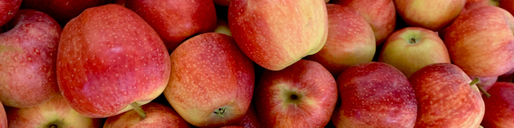
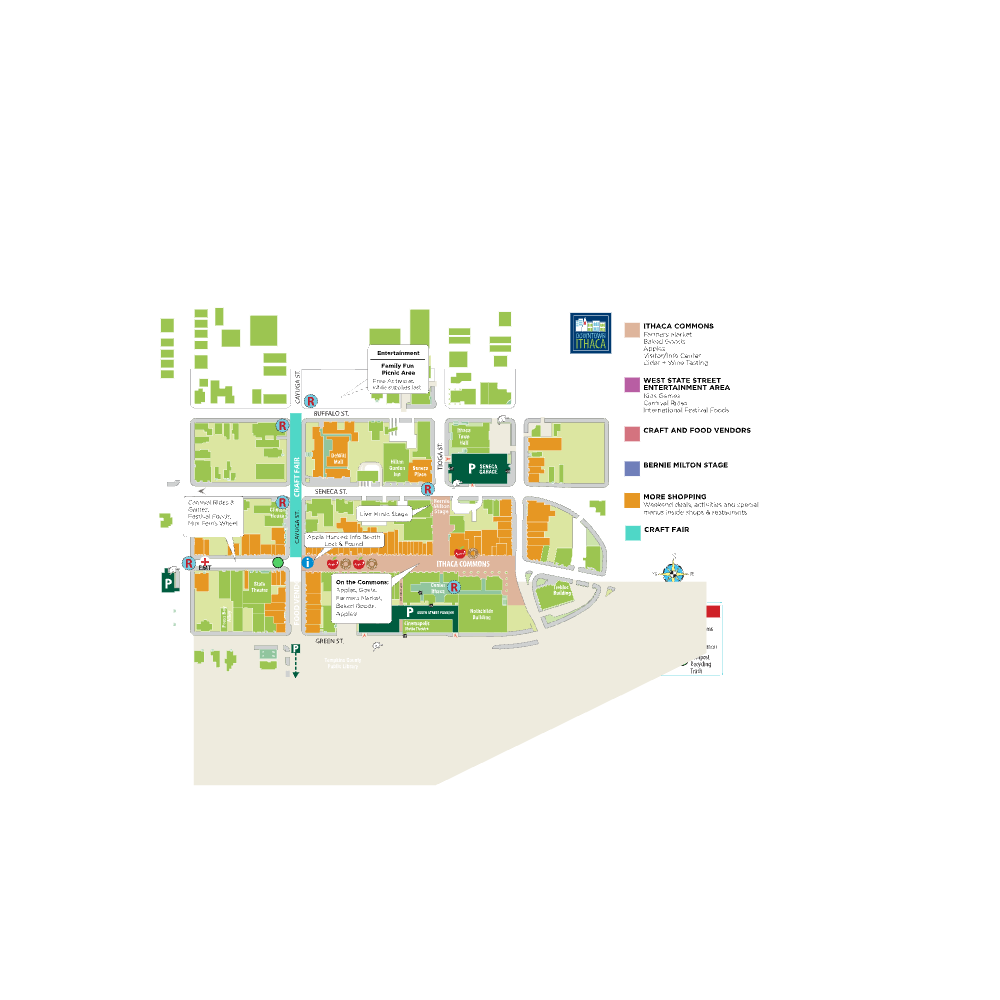
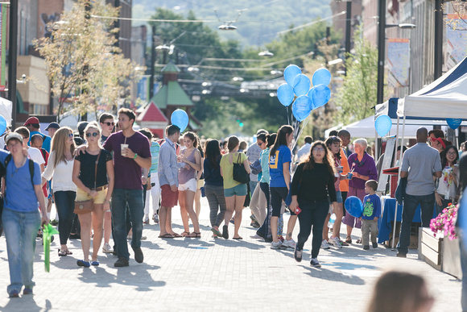

Student design project · Historical 2024 event guide · Not the official festival website


Directions & Parking
Tompkins Consolidated Area Transit (TCAT) offers public bus transportation from all over the county. One-way fares are $1.50 per adult. Cornell University students can ride without a fare on weekends and after 6pm with their student ID card. Learn more about fares at https://tcatbus.com/fare-pass-optionsResidents and visitors can park in the Seneca, and Cayuga Street garages and walk to anywhere in Downtown Ithaca. Please note the Green Garage is closed for construction.
Garage parking is $1.00 per hour in the garages. On-street parking is $1.50 per hour during the week until 6pm.
For additional downtown parking, visit https://www.cityofithaca.org/243/Parking

TCAT Fall 2022 Schedules
Effective August 22, 2022 through January 22, 2023
Route 10: Mon-Fri Cornell – Commons Shuttle Also Serving: Sage Hall, Boldt Hall, Milstein Hall, Goldwin Smith Hall, Stewart Ave.
Route 11: Everyday Ithaca College – Commons Also Serving: College Circle Apts., Challenge, South Hill Business Park, South Hill Elementary, Longview
Route 13: Everyday Fall Creek Also Serving: Commons, DMV, Aldi, Ithaca High School, Lake St., Hancock St., Cayuga St., Stewart Park Weekdays Only: and Shops at Ithaca Mall
Route 13 Route 13S: Everyday Fall Creek Shopper Also Serving: Commons, Aldi, DMV, Hancock St., Cascadilla @ Fulton (near new Greestar Co+op location)
Route 13S Route 14: Everyday Hospital–West Hill – Commons Also Serving: W. State Street, West Village, Lehman School, Linderman Creek Apts., Overlook Apts., Conifer Village Apts.
Route 14 Route 14S: Everyday West Hill Shopper Also Serving: Overlook Apts., Cayuga Meadows, Linderman Creek Apts., Conifer Village Apts., West Village, Chestnut Hill Apartments, Wegman’s, Tops, Walmart, Trader Joe’s